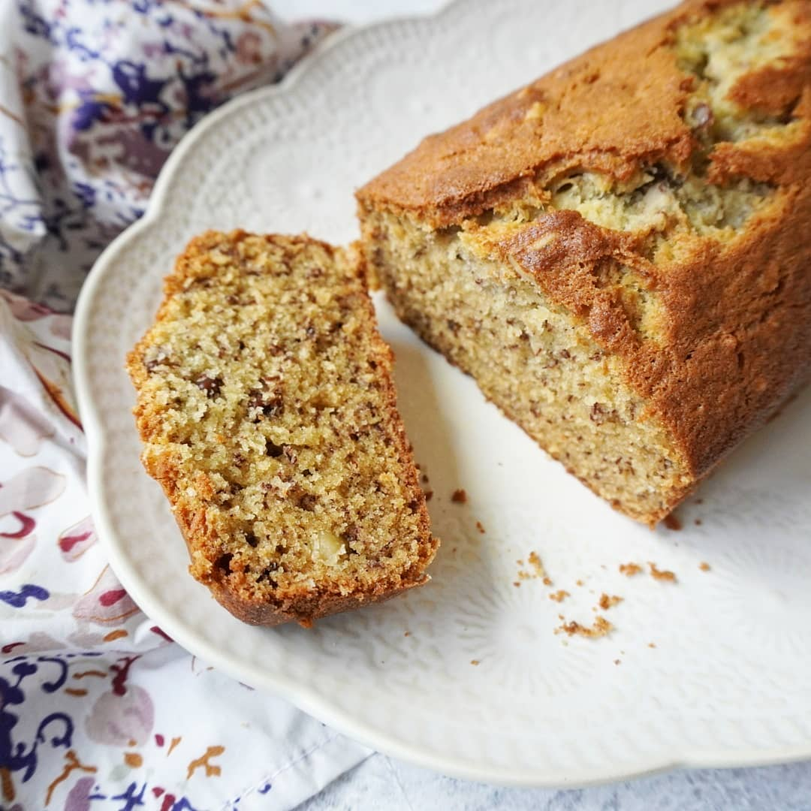

Budin de Banana Vegano

Descripcion
Este es un budin vegano muy rico y humedo que viene perfecto por si queres empezar la manana con algo dulce para acompanar al mate,
o simplemente para cortar con algo dulce luego del almuerzo o cena.
Ingredientes
- 1/3 de taza de aceite girasol
- 1/2 de taza de azucar de mascabo (se puede usar blanca)
- 1 cdta. de canela
- 1/4 cdta. de nuez moscada
- 1 cdta. de polvo para hornear
- 1 cdta. de bicarbonato de sodio
- 4 bananas grandes
- 12 cdas. de agua tibia
- 1 taza de harina integral
- 1 1/4 de taza de harina leudante
Preparacion
- Pisar las bananas
- Mezclar ls bananas con el aceite
- Agregar los ingredientes secos a la mezcla
- Ir agregando el agua tibia de a poco
- Ya con una mezcla homogenea, colocarla en un molde enmantecado y enharinado
- Cocinar en un horno precalentado a temperatura media por 35 minutos
- Pasados los 35 minutos pinchar el budin con un cuchillo, si el cuchillo sale limpio, retirar del horno, si sale con mezcla, seguir cocinando)
- Sacar el molde del horno y dejarlo enfriar por 15 minutos antes de desmoldarlo